Vinculación entre empresas e IES
La vinculación entre las empresas y las IES es una práctica que otorga múltiples beneficios a los actores más relevantes de esta ecuación, tales como: jóvenes, IES y empresas. No obstante, esta práctica no se da ni con la calidad ni la frecuencia deseable.
La cooperación entre las empresas y las IES reduce la información asimétrica entre ambas instituciones. Una manera de mejorar la calidad del capital humano tiene lugar cuando, por un lado, las empresas comparten información sobre las características y el tipo de competencias que necesitan de los jóvenes egresados. Y, por otro lado, las IES desarrollan, validan, complementan y comunican el desarrollo de sus planes de estudio con los directores de Recursos Humanos y directores de áreas funcionales de las empresas para atender las preocupaciones del mercado laboral. De esta manera se pueden atender carencias en los conocimientos y habilidades de los jóvenes desde las aulas de la universidad y se pueden anticipar las necesidades del sector laboral.
En este sentido, en Torreón el 83% de las IES entrevistadas tienen alguna forma de colaboración con las empresas. Este resultado es alentador ya que significa que los canales de comunicación y cooperación entre el sector productivo y educativo están abiertos en la localidad. La modalidad de estos esquemas de vinculación más frecuente son las prácticas profesionales de los estudiantes en las empresas, seguido de las estadías o residencias de estudiantes de las IES técnicas, principalmente.
Gráfica 1 - Empresas que tienen esquemas de vinculación con IES
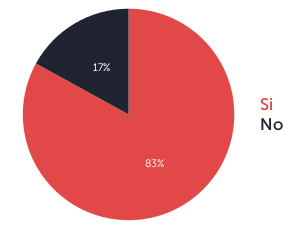
| Empresas que tienen esquemas de vinculación con IES | Resultado |
|---|---|
| Si | 17% |
| No | 83% |
Gráfica 2 - Esquemas de Vinculación
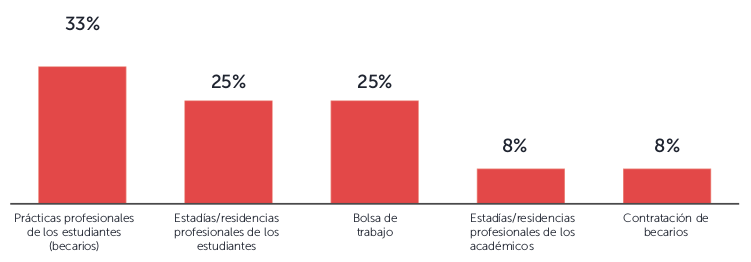
| Esquemas de Vinculación | Resultado |
|---|---|
| Prácticas profesionales de los estudiantes (becarios) | 33% |
| Estadías/residencias profesionales de los estudiantes | 25% |
| Bolsa de trabajo | 25% |
| Estadías/residencias profesionales de los académicos | 8% |
| Contratación de becarios | 8% |
Si bien la mayoría de las IES tienen esquemas de vinculación con empresas, estos se limitan a esquemas de contratación de interns o “becarios” y a la publicación de vacantes en las bolsas de trabajo universitarias. Cuando le preguntamos a las empresas si contaban con convenios formales para modificar y diseñar planes de estudios de forma sistemática con las IES, desafortunadamente, todas las empresas contestaron que no. Es evidente que existe un área de oportunidad significativa para llevar las modalidades de vinculación actuales (qué son las más simples) a tipos de vinculación más sofisticadas como el llegar a establecer canales de colaboración y diálogo entre ambos actores para actualizar o desarrollar los planes de estudio. Especialmente si tomamos en cuenta que, tanto las empresas como las IES, consideran que estas sinergias son útiles para atender las demandas y necesidades de capital humano local.
Prácticas de reclutamiento
Las prácticas de selección y el contexto del empleo entre los jóvenes muestran resultados variados. Por un lado, las respuestas de las empresas confirman que la entrevista de trabajo continúa siendo una de las principales herramientas para el proceso de selección. Asimismo, las empresas siguen revisando los curriculum vitae (CV) de los jóvenes, por lo cual, es esencial que las IES enseñen a sus estudiantes cómo armar un CV, así como los elementos básicos de una entrevista laboral.
Gráfica 3 - Esquemas de Vinculación
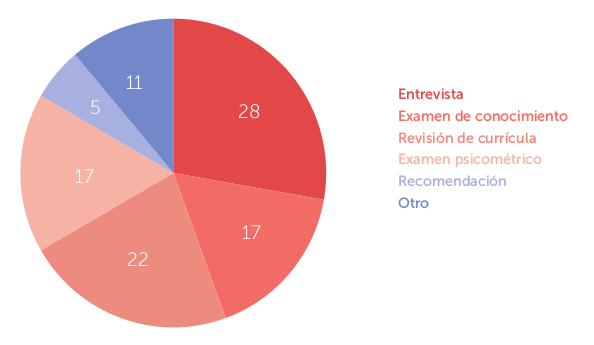
| Prácticas de selección | Resultado |
|---|---|
| Entrevista | 28 |
| Examen de conocimiento | 17 |
| Revisión de currícula | 22 |
| Examen psicométrico | 17 |
| Recomendación | 5 |
| Otro | 11 |
Por otro lado, las prácticas de reclutamiento y contacto con los jóvenes profesionistas son dominadas por las bolsas de trabajo de las universidades o IES. Además, si consideramos la importancia de otras bolsas de trabajo como las gubernamentales o en línea, es evidente que las bolsas de trabajo de toda índole siguen siendo los más utilizados por las empresas en Torreón.
Las relaciones interpersonales o “los conocidos” son un medio de contacto entre la empresa y los jóvenes. Las recomendaciones directas a la empresa, o de los familiares y conocidos de los jóvenes que trabajan en la empresa son muy importantes. De hecho, el 40% de los jóvenes reclutados por las empresas entrevistadas llegaron por medio de estos contactos.
Gráfica 4 - Formas de reclutamiento
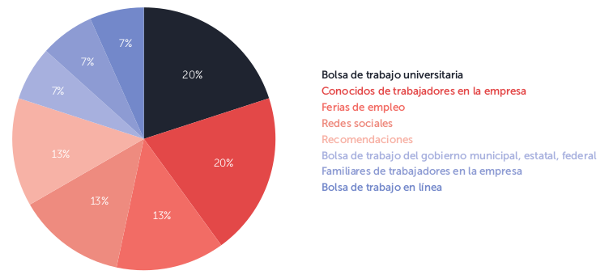
| Formas de reclutamiento | Resultado |
|---|---|
| Bolsa de trabajo universitaria | 20% |
| Conocidos de trabajadores en la empresa | 20% |
| Ferias de empleo | 13% |
| Redes sociales | 13% |
| Recomendaciones | 13% |
| Bolsa de trabajo del gobierno municipal, estatal, federal | 7% |
| Familiares de trabajadores en la empresa | 7% |
| Bolsa de trabajo en línea | 7% |
La evidencia demuestra cómo las prácticas de reclutamiento y selección de empleo no han variado mucho en los últimos años. No obstante, en cuanto al tema de competencias y preparación, hemos encontrado evidencia de que a pesar de que los entrevistados reconocieron que la “falta de experiencia laboral” es el principal obstáculo para contratar jóvenes, la falta de competencias suaves y duras también evita que una gran proporción de jóvenes sean contratados.
A lo largo del estudio encontramos evidencia de la importancia de las competencias, tanto duras como suaves, en el proceso y decisión de contratación de un joven profesional. Las razones más comunes por las cuales las empresas no contratan a los jóvenes son: “no saberse vender”, “falta de competencias suaves” y la “falta de competencias duras”; las tres categorías equivalen al 44% de las razones por las cuales no se contratan a los jóvenes.
Gráfica 5 - Razones de rechazo
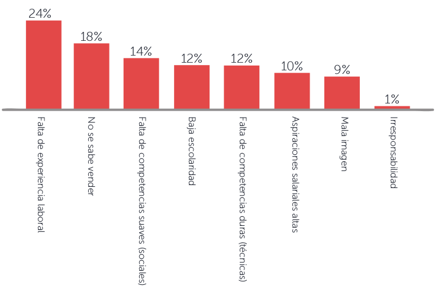
| Razones de rechazo | Resultado |
|---|---|
| Falta de experiencia laboral | 24% |
| No se sabe vender | 18% |
| Falta de competencias suaves (sociales) | 14% |
| Baja escolaridad | 12% |
| Falta de competencias duras (técnicas) | 12% |
| Aspiraciones salariales altas | 10% |
| Mala imagen | 9% |
| Irresponsabilidad | 1% |
Competencias
A continuación se presentan las gráficas y datos sobre el tamaño de la brecha de competencias, un desglose de las competencias más importantes y más escasas, así como la importancia y escasez relativa para cada grupo de competencias suaves.(2)
2) La importancia y escasez relativa de las competencias duras no se pudo obtener ya que el número de respuestas representativas para dichas competencias fue insuficiente.
Tamaño de la brecha
La brecha de competencias se mide tomando en cuenta la proporción de vacantes que tienen las empresas y que no han podido llenar a pesar de haber tenido candidatos que se postularon para el puesto. Es decir, queremos aproximar cuántas vacantes permanecieron vacías dado que los jóvenes que llegaron a preguntar por esta o que inclusive completaron alguna parte del proceso de reclutamiento no fueron contratados porque no estaban lo suficientemente preparados o no cumplían con los requisitos necesarios.
En Torreón, alrededor de 6 de cada 10 empresas entrevistadas afirmaron haber tenido una vacante sin llenar durante el último año a pesar de que tuvieron posibles candidatos para el puesto. Este porcentaje es alto si se compara con el tamaño de la brecha a nivel nacional que, de acuerdo a la ENCOP 2014, es de 26%.
Gráfica 6 - ¿Ha tenido vacantes que no ha podido llenar a pesar de tener candidatos para el puesto? (Tamaño de la brecha)
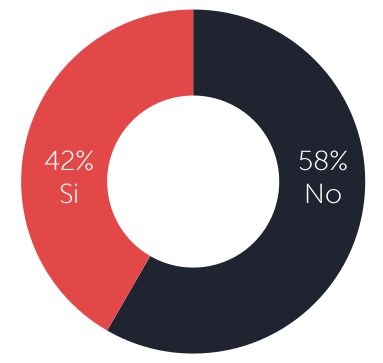
Gráfica 7 - Competencias Generales
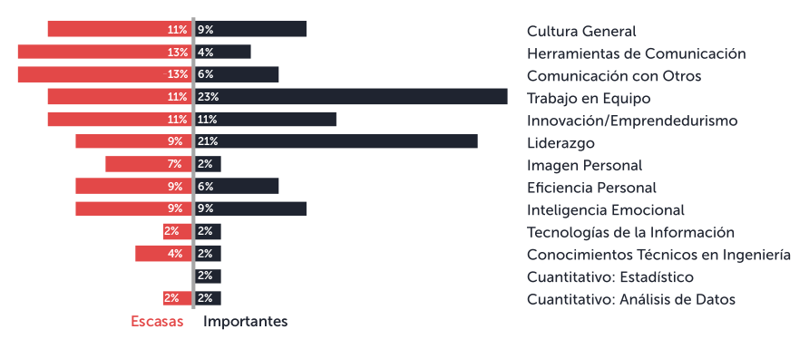
Gráfica 8 - Cultura General
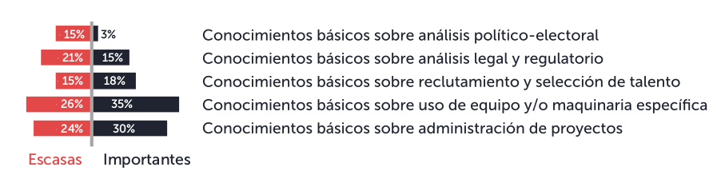
Gráfica 9 - Herramientas de la Comunicación
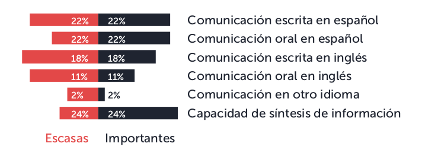
Gráfica 10 - Comunicación con otros
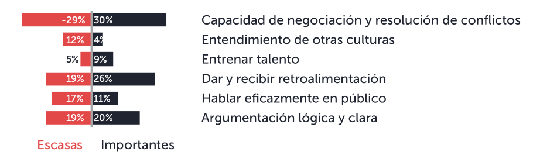
Gráfica 11 - Trabajo en equipo
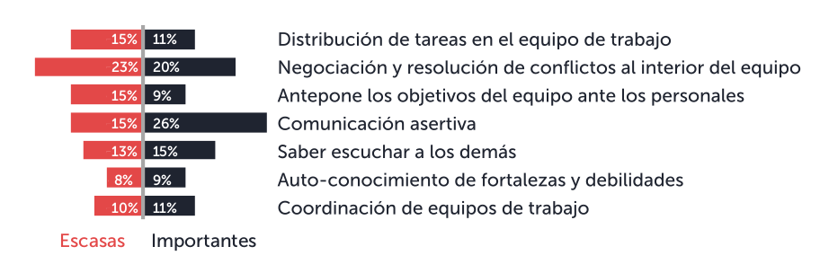
Gráfica 12 - Innovación/emprendimiento
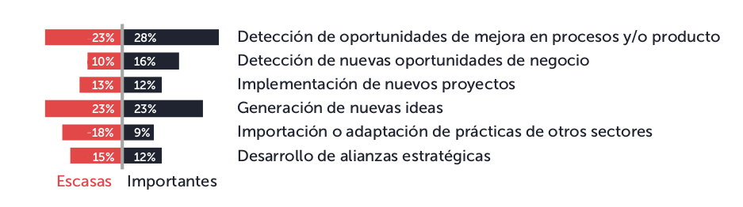
Gráfica 13 - Liderazgo
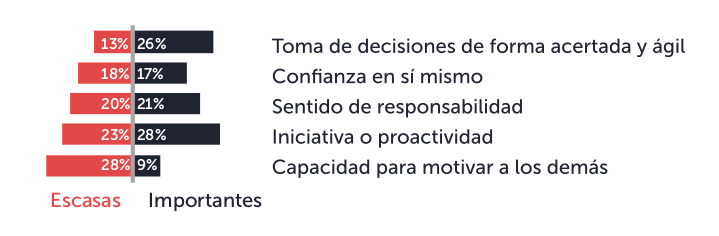
Gráfica 14 - Imagen personal
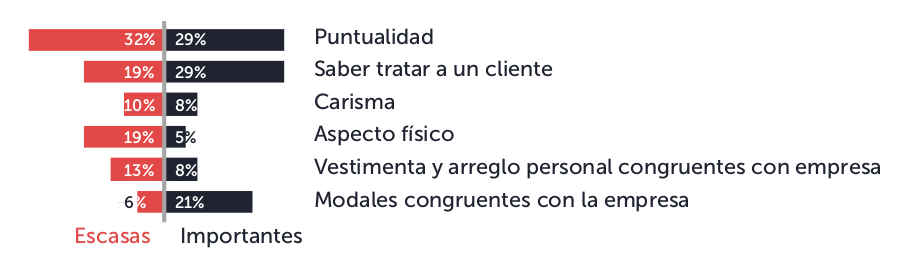
Gráfica 15 - Eficiencia personal
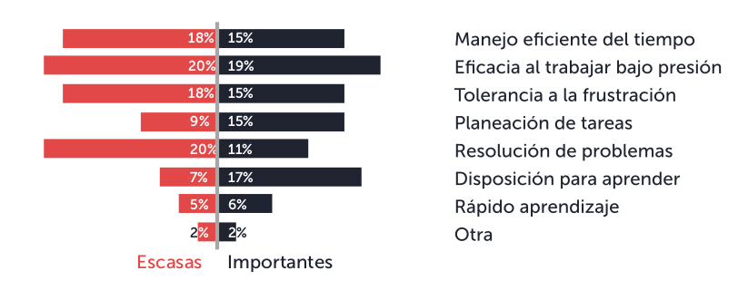
Gráfica 16 - Inteligencia emocional
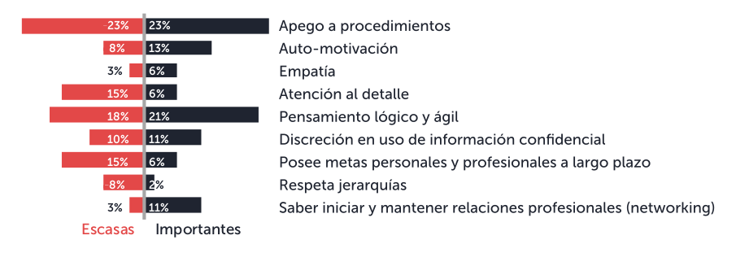